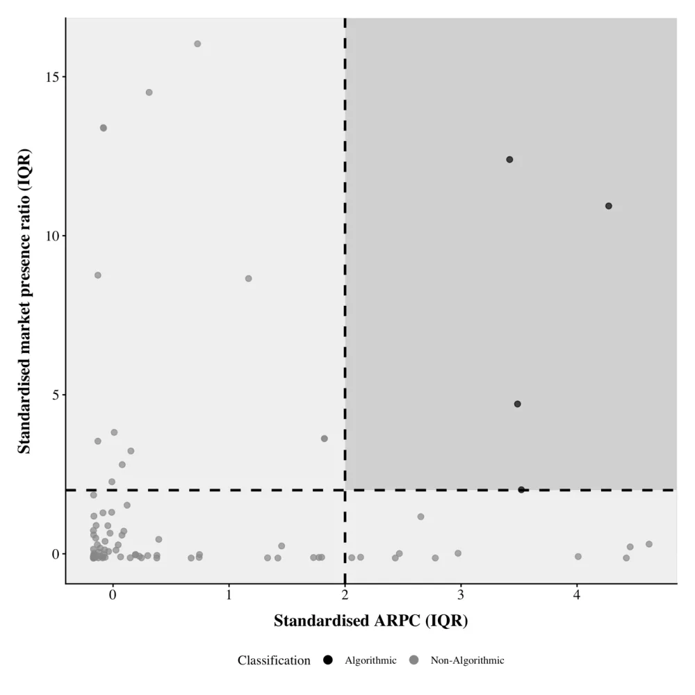

Algorithmic pricing
How to identify algorithmic pricing when price data is sparse, whether it makes price coordination more likely, and whether it makes retailers more profitable.
PhD, Senior Lecturer in Information and Communications Technology
Dalarna University, Sweden
I study how prices work online: why the same product costs different amounts in different shops, how pricing algorithms behave, and what price comparison websites do to retailers.
I teach programming and data analysis, and I was a STINT Teaching Sabbatical Fellow at Arizona State University in 2025–2026.
How to identify algorithmic pricing when price data is sparse, whether it makes price coordination more likely, and whether it makes retailers more profitable.
Why firms compete on these sites, what that does to productivity, profits and wages, and what it is worth to have the lowest price or the highest customer rating.
What causes prices to differ in markets where searching is cheap, and whether cross-border transaction costs still matter in Nordic online retail.

Latest article, open access
International Journal of Engineering Business Management, 2026
Existing detection methods need sub-daily price data, but researchers and competition authorities usually have only daily snapshots. This heuristic works on daily data by combining how often a retailer changes prices with how persistently it stays in the market.
Applied to 10,365 retailer-category observations from PriceSpy, across seven countries and 16 product categories, it classifies approximately 4.5% of retailers as algorithmic pricers, as a lower-bound estimate.